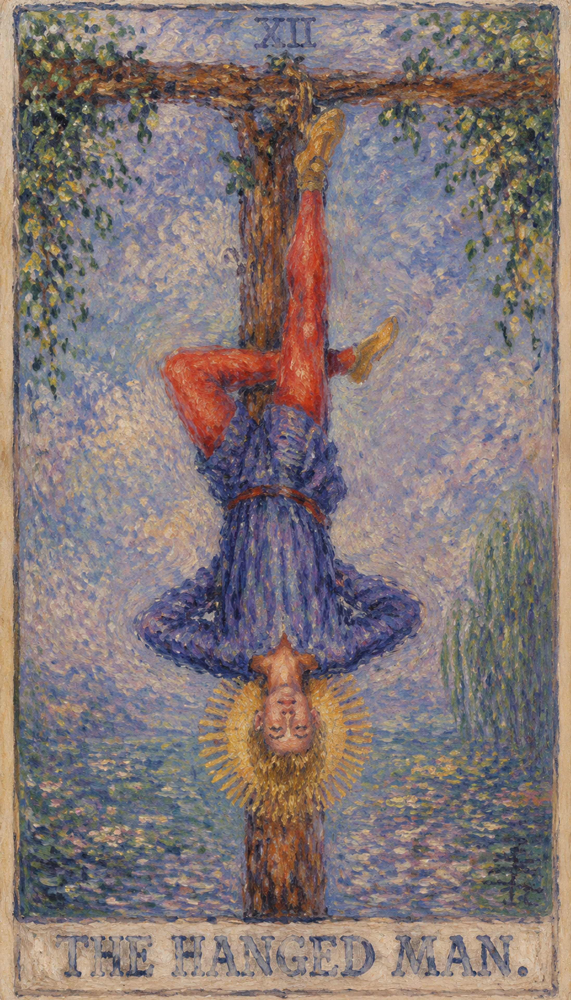

— 貳 · CORRESPONDENCES
对应要素Esoteric Correspondences
- 元素 Element
- 水水 · 情感、直觉与深层潜意识
- 天体 Celestial
- 海王星Neptune · 奉献、等待与超越的视角
- 生命之树 Tree of Life
- Mem第23条路径 · 联结严格 (Geburah) 与荣耀 (Hod)
- 希伯来字母
- Mem第十三个字母 מ · "水"，洗礼、包容与顺服的羊水


倒吊人代表主动的暂停。表面上他被困住，实际上他通过放下控制，换来新的视角。 当这张牌出现，说明你正遇到“暂停、牺牲、换位、臣服”的课题。它既可能表现为外部事件，也可能是内心正在成熟的一个阶段。牌面上，一位年轻男子双手被反绑，悬挂在一棵 T 字形的树干上：双手交叉成三角形，双腿交织成十字形，恰好构成西方炼金术中的一个符号，预示伟大事业的完成，也暗示从低层欲望向道德升华的过程。他的服饰由上而下变化——红色外裤、蓝色上衣、金色光环，与圣职者的三层头冠、命运之轮的三个同心圆相呼应，分别对应身体、心智与灵魂三个层面，强调换位思考的重要；脚上的金色鞋子表明他崇高的牺牲精神，也预示即使换位思考，道德仍是首要。
← 返回大厅 / 选择其它卡牌男子倒挂在树上，头部有光环，平静姿态说明这是主动的暂停。倒吊者表情平静，愿意自我牺牲，即使肉体消逝，灵魂将永存——他对其中的道理有着深刻的领悟，明白无论情况多糟，只要耐心等待，逆境终将过去。倒吊者对应海王星，象征牺牲与理想；他平静而和谐，自愿牺牲，因为深知舍弃才能获得，是一位崇高的殉道者。若把他颠倒过来看，便与世界牌中的舞者相似——他的编号 12 恰与世界牌 21 相反，代表着一个“倒吊的世界”，提醒人换个角度去看，换一种思考模式。
倒吊者的关键词是“牺牲”，且多为自愿。在感情牌阵中，他最常代表“苦情”：当事人爱上了不爱他的人，或爱上了不能在一起的人；从理性看这段感情不该继续，但无论旁人如何劝说，当事人宁愿忍受伤痛也不回头——因为这样做让他感到快乐，即便痛苦，那也是他所追求的痛苦。倒吊者看到的世界与常人完全相反：积极地说，他为你提供了“从不同角度看问题”的机会，是一张适合静心思考的牌；消极地说，与众不同的观点容易招致不理解、不认同与不支持，此时“不辩驳”往往是最明智的选择。把他吊在树上的并非绳子，而是他自己的内心，因此倒吊者通常代表一段较长的、难有实质进展的时期——对陷入流沙的人来说，轻举妄动是最大的忌讳，除了思考，别无其他安全的选择。
正位是“今日之恶是明日之善，坏心办好事”；逆位是“今日之善是明日之恶，好心办坏事”。体现倒吊人思想的话语如：“以战争求和平，则和平存；以妥协求和平，则和平亡”，又如“现金扶贫究竟是善是恶”——辩证地看待问题，正是倒吊人所表示的核心含义。
男子倒挂在树上，头部有光环，平静姿态说明这是主动的暂停。

男子倒挂在树上，头部有光环，平静姿态说明这是主动的暂停。
表现当事人面对课题时的心理位置。
提示事件发生的精神气候与现实压力。
象征这张牌运作能量的工具或门槛。
显示意识清晰度、希望或阴影。
对应此阶段在人生旅程中的功课。
代表牺牲、新的视角、等待与非物质主义。
头部的光环象征智慧与精神启示。
裤子的红色象征物质、力量与情欲。
蓝色衣物象征知识与宁静。
暗示某种束缚或牺牲的姿态。
代表生活中某种形式的限制，或需要改变的地方。
树木与绿叶的背景象征持续的生长与个人发展。
树的形状象征生命的交叉点，以及连接地面与天空的桥梁。
倒吊者表情轻松，表明这是一种自愿的牺牲与内省。
象征精神的纯净与贵重。
倒吊者的腿形成“4”字，可能代表稳定与固定的状况。
整幅构图呈现出平衡与和谐。
可能代表固定的思想或固执的态度。
数字 12 代表此牌所在的灵魂阶段。它指向经验累积后的转折与整合，引导人从事件表层进入更深的精神功课。
在解读时，倒吊人提醒我们：事件表面的顺逆终会变化，真正值得把握的是牌面所揭示的内在功课。

**关键词**：暂停，牺牲，等待，换角度，臣服，灵性领悟，进退两难，因祸得福，遭遇困难磨练以致心智成熟，以不同的角度看待事物，停顿，投降，被迫放弃，屈服，新视野，新观点，反思，独立思考，忍耐
正位的倒吊人表示这股能量正在逐渐清晰。它代表自我牺牲、接受命运、静待时机与深思熟虑，是灵魂的觉醒——换个角度看问题、延迟满足、付出代价、忍耐困难、接受挑战。顺着牌面主题行动，事情会显露可被把握的方向。
暂停，牺牲，等待，换角度，臣服，灵性领悟，进退两难，因祸得福，遭遇困难磨练以致心智成熟，以不同的角度看待事物，停顿，投降，被迫放弃，屈服，新视野，新观点，反思，独立思考，忍耐
水 元素 · 开启、滋养与自我调和
健康生活上，倒吊人提示身心状态与当前心理课题相连。适合检查压力来源、作息习惯和身体信号，并以更稳定的方式照顾自己。这是一段宜静养、宜“暂停”的时期，与其勉力硬撑，不如允许身心慢下来，用沉淀与换位思考为自己重新蓄力。
可能代表重新审阅自己与周边的事物，相信坚持就是胜利。若问具体事件，正位多表示事情进入关键阶段。主动理解它的意义，会比单纯等待结果更有力量。

**关键词**：僵持，受害者心态，白白牺牲，拒绝放手，拖延，希望破灭，因私欲而受罚，做无用功，没有必要的付出，自我毁灭，缺乏实施能力，事如泡影，抵制，抗拒，无决断力，优柔寡断，自私自利，固执，恐惧改变，逃避责任，无法看到新的视角
逆位的倒吊人表示这股能量受阻、失衡或被错误使用：可能表现为逃避责任、行动冲动、过于自私，无法接受现状、固执己见，缺乏牺牲精神而做出错误决定，或过分执着、无法接受挑战。此时最重要的是先看清自己是否正在抗拒这张牌所要求的功课。
僵持，受害者心态，白白牺牲，拒绝放手，拖延，希望破灭，因私欲而受罚，做无用功，没有必要的付出，自我毁灭，缺乏实施能力，事如泡影，抵制，抗拒，无决断力，优柔寡断，自私自利，固执，恐惧改变，逃避责任，无法看到新的视角
水 元素 · 延迟、失控与过度自我沉溺
健康上，逆位常提示压力累积、情绪压抑、作息失衡或身体警讯被忽略。当人陷入“白白牺牲”与拒绝放手的僵局，长期内耗会拖垮身心。建议减少极端做法，放下那些不再服务于你的执念，重新建立可持续的生活节奏。
可能代表白费心机、脱离现实、缺乏行动力，或烦人的应酬。事情可能延迟、反复或暴露隐藏问题。先修正模式，再谈结果。

当倒吊人出现在三牌阵中，它象征的是能量在时间维度上的显现。点击下方卡牌揭示隐秘启示。
过去可能有过一段停滞不前或需要牺牲的时期，对现状产生了影响。
可能正经历一次深刻的自我反省，或意识到需要改变旧习惯。
未来可能需要放弃或牺牲某些东西，才能实现个人成长或达到目标。